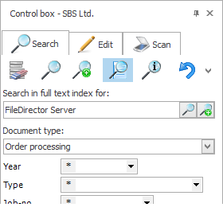

        <div id="productInfo" class="content-width-wrap">
            <div id="productTitle">
    <h2>Searching</h2>
    <div>
            <h4>Easily Search For Your Documents</h4>
            <br>
            <p> FileDirector leaves the choice to you how to search for your documents. You can use the defined index fields to search for information you need, either within a specific document type or an entire filing cabinet. You can also use full text search to find a document by its content. </p>
            <br>
            <p> The documents found are listed. This list can be sorted and filtered. If you double-click on an entry in this list, the document is displayed. </p>
            <br>
            <p> FileDirector can handle in standard a wide range of different document formats. Your advantage is, that you can see your documents immediately. It doesn’t matter whether you have installed the application the document was created with. </p>
            <br>
            <div class="content-left">
                <br>
                <br>
                <h4>Index data search:</h4>
                <p> All search entries are given in a control box. Depending on their user rights, users can search within a single document type or up to all document types of a cabinet. Various options for each field, such as “from-to”, “bigger/smaller than”, “equals” and further more, can be used to specify a search. </p>
                <br>
                <h4>
        Helpful:</h4>
                <p> FileDirector remembers the ten most common search items so that they are at hand when needed. </p>
                <br> </div>
            <div class="content-right content-img"></div>
            <br>
            <br>
            <div class="content-left content-img">  </div>
            <div class="content-right">
                <h4>Full text search:</h4>
                <p> If documents are indexed as full text, the search takes in the full file content. Full text search can be combined with the index search to refine the accuracy of hits. The search result for a full text search shows the results with the most matches to the search criteria listed first. </p>
                <br> </div>
            <br>
            <br>
            <div class="content-left">
                <h4>
        Search results:</h4>
                <p> The search result list is a flexible and high-performance tool. The user can define the format of the list. The list can also be restricted by used index columns to filter hits by selecting a specific field content. </p>
                <br>
                <p> The search list can be used to check out documents for processing, copying, sending as an email or for processes (such as approving invoices) or other activities. Naturally, it is also possible to further process documents offline at a local level. </p>
            </div>
            <div class="content-right content-img">  </div>
            <br>
            <br>
            <div class="content-left content-img">  </div>
            <div class="content-right">
                <p> Document display: Document display via a miniaturised view or in original size offers ultimate flexibility for display. If preferred, display modes can also be combined. From the miniaturised view, it is possible to send pages for printing, mailing, storage or copying. Earlier versions of the document are available under a separate tab. </p>
                <br>
                <p> In addition, users can rotate, enlarge or reduce display size, can display several pages or several documents simultaneously, and can also opt for full-screen document display. </p>
                <br> </div>
        </div>